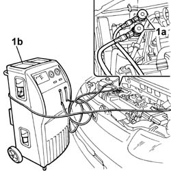

0010T84 coolant for air conditioning system dehydrate and recharge
- Path
- Procedures > 00 MAINTENANCE > 0010 NEW UNITS AND PLANNED MAINTENANCE > 0010T VEHICLE OIL AND FLUIDS > 0010T84 coolant for air conditioning system dehydrate and recharge
- Kind
- repair procedure (removal / refitting; the operation number is the code)
- Applies to
- all engines; all production periods
- Interactive page
- https://sloeber94.github.io/elrnDB-fPnd/en/#/2752386
Applies to: all engines; all production periods
Applies to: all engines; all production periods
Let the engine run with the air conditioning switched on for 10 - 15 minutes.
Switch off the engine.
1. Connect the pressurizing and drainage pipes (1a) for the drainage equipment (1b) to the valves on the air conditioning system high and low pressure pipes.

Applies to: all engines; all production periods
Start the procedure for draining the coolant fluid, following the instructions in the equipment manual.
Whilst draining the system, the fluid removed from the compressor should be collected in a special container.
Refill the system with the same amount of recommended fluid shown on the container.
If certain components are replaced, the following quantities of fluid must be added for each of the components replaced:
- Drier filter: 15cm3
- Pipes: 5 cm3 /m
- Evaporator: 40 cm3
- Condenser: 40 cm3
In the case of accidental breakages which result in the rapid draining of the system (in less than 5 minutes), it is not possible to determine the exact amount of fluid which has escaped because of the high pressure of the fluid. Add 75 cm of fluid.
Start the coolant fluid repressuring procedure, following the instructions in the equipment manual.
Introduce the recommended quantity of coolant fluid.
 | Type | Component | Name | Qty. |
|---|---|---|---|---|
- | Fluid (g) | Air conditioning circuit | R134a | 500 ± 40 |
In the case of damage to the compressor or other system components followed prolonged exposure to the air of the pipes (more than 6 hours), the system 'WASHING' procedure has to be carried out, proceeding as follows.
Clean the pipes connected to the compressor using an air line.
Connect the (now drained) system to the repressurizing equipment.
Introduce the recommended quantity of coolant fluid at the high pressure side.
Recover the coolant fluid from the low pressure side.
Repeat the introduction and recover the fluid.
Proceed with the system draining and repressurizing operations as described previously.
Topics that link to this page (44)
- L012 CLIMATE CONTROL TOO COLD
- S50 CLIMATE CONTROL SYSTEM NOISY' / (IN THE ENGINE COMPARTMENT)
- 1004B12 power unit with manual gearbox - r+r for versions with a/c
- 1004B13 POWER UNIT WITH MECHANIC TRANSMISSION - R.R. FOR MODELS WITH AIR-CONDITIONER AND FOUR-WHEEL DRIVE
- 1016B10 single cylinder head extension - change gasket
- 1016C11 SINGLE CYLINDER HEAD-R R GASKET FOR VERSIONS WITH AIR CONDITIONER
- 1020B12 CHAIN-DRIVE VALVE GEAR COVER - R.R. AND GASKET REPLACEMENT FOR MODELS WITH AIR-CONDITIONER
- 1028H11 piston connecting rod set - r r
- 1028H21 piston with connecting rod - r r
- 1032A12 CHAIN AND GEARS for timing system - R.R. for timing or Replacement.
- 1032B47 toothed drive pulley - r r for versions with air conditioner
- 1032B62 a/c duct pulley - r r
- 1032C40 Timing CHAIN TENSIONER PLATE - R.R.
- 1036H57 hydraulic tappets all r r
- 1036L10 camshafts in cylinder head extension - r r - includes cylinder head extension replacement if necessary
- 1084B16 engine oil pump - r+r vehicles with a/c
- 1084B26 emgine oil intake duct - r r
- 1084B45 RIGID air supply PIPE between air-air heat exchanger and intermediate hose - R.R.
- 5010D17 mixed air upper sensor - r r
- 5040A20 air conditioner compressor - r+r - includes fluid level check and top up if necessary
- 5040A26 compressor mount - r r
- 5040A40 air conditioner condenser - r+r
- 5040A44 air conditioner dehydrating filter/accumulator - r+r
- 5040A50 pipe from compressor to air conditioner condenser - r+r
- 5040A58 pipe from expansion valve to compressor - r+r
- 5040A60 pipe from condenser to evaporator (expansion pipe) - r+r
- 5040B20 AIR CONDITIONING SYSTEM' PRESSURE LINEAR TRANSDUCER - R.R.
- 5040B30 expansion valve (tube orifice) - r+r
- 5040B64 sensor on evaporator for a/c ecu - r + r
- 5040C10 air conditioner box - r+r
- 5040C26 evaporator unit condensate collection tank - r r
- 5040C30 fan motor - r+r
- 5040C50 air conditioner heater radiator - r+r
- 5040C64 a/c evaporator - r+r
- 5040D14 ecu with automatic air conditioner pushbuttons - r+r
- 5040D75 Air conditioning recirculation flap control MOTOR - R.R.
- 5505A90 rear wiring bundle - r r or replace
- 5505C26 bonnet wiring - r r
- 5505C34 intergrated instrument under facia front air bag wiring - r r
- 7005A24 front side door r r
- 7040A97 facia trim support beam - r r
- 7040A98 instrument facia trim support beam - r r with facia removed
- 7040L10 cabin floor carpet - r r
- 7210A02 FRONT END ASSEMBLY RR